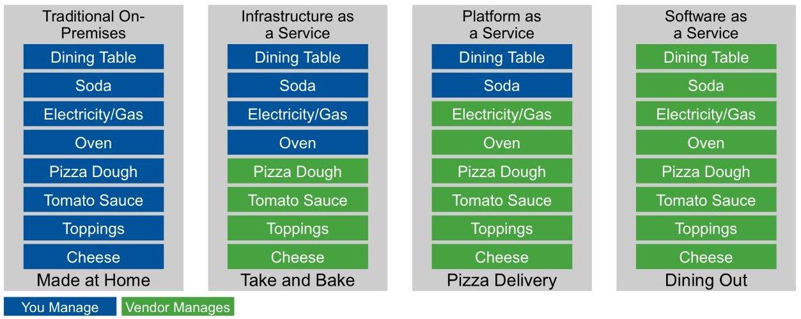

Pizza as a Service

Quelle: Albert Barron, IBM
### Typen von Clouds
- Traditional IT
- Public Cloud
- Private Cloud
- Hybrid Cloud
### Traditionelle IT- Alles In-House
- Anforderungen erfassen
- Beschaffung
- Integration in existierende Systeme
- Strom, Netzwerk, Kühlung
### Public Cloud
- betrieben von einem Dienstleister **für die Öffentlichkeit**
- Massengeschäft
- **keine** Anpassungen für einzelne Kunden
### Private Cloud
- betrieben von einem Dienstleister für **einen** Kunden, oder
- vom Kunden selbst für die eigene Organisation
- auf kundeneigener oder Dienstleister-Hardware
### Hybrid Cloud
- Verbindung von public und private Cloud
- Workload kann frei verschoben werden, je nach Anforderung
### Potentiale (1)
- Einsparung von Personalkosten durch Standardisierung und Automatisierung von
- Konfiguration
- Betrieb
- Verwaltung
- Überwachung
### Potentiale (2)
- Verbesserte Kapitalnutzung durch erhöhte Auslastung der Hardware
- Verringerte Lizenzkosten durch gemeinsamen Betrieb
- Beschleunigte Bereitstellung von Resourcen (Minuten statt Tagen)
### Risikofaktoren (1)
- Vendor Lock-in
- Gewährleistung und Haftung
- Cloud-Anbieter haben ggf. Geschäftsbeziehung mit Endanwender (Fernabsatzgesetz, AGB, MWSt.)
- Urheberrecht (an Software und den mit ihr erstellten Werken)
- Datenschutz (“EU-Cloud”)
### Cloud-native
- pets vs. cattle
- 12 factor apps
### pets vs. cattle
- Jemand installiert Standard-Software auf einem Server
- Eine andere Person kopiert selbstentwickelte Software dorthin und startet sie manuell
- Ein Dritter konfiguriert System- und Anwendungssoftware
- Was passiert, wenn der Server kaputt geht?
### pets vs. cattle
- Automatisierung
- Infrastructure as code
- Tools Chef, Ansible ...
### Die 12 Faktoren (1)
- Eine im Versionsmanagementsystem verwaltete Codebase, viele Deployments
- Abhängigkeiten explizit deklarieren und isolieren
- die Konfiguration in Umgebungsvariablen ablegen
### Die 12 Faktoren (2)
- Unterstützende Dienste als angehängte Ressourcen behandeln
- Build- und Run-Phase strikt trennen
- Die App als einen oder mehrere Prozesse ausführen
### Die 12 Faktoren (3)
- Dienste durch das Binden von Ports exportieren
- Nebenläufigkeit wird durch das Skalieren individueller Prozesse ermöglicht
- Schneller Start/Stopp ermöglicht robuste Anwendungen
### Die 12 Faktoren (4)
- Entwicklung, Staging und Produktion so ähnlich wie möglich halten
- Logs als Strom von Ereignissen behandeln
- Admin/Management-Aufgaben als einmalige Vorgänge behandeln